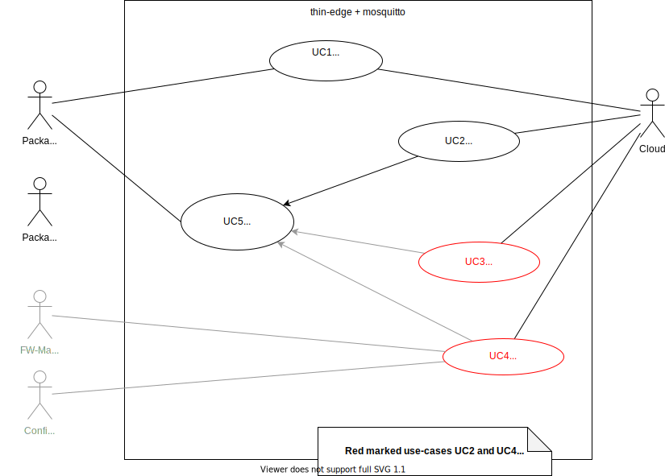

Sourcing, Processing and Publishing Telemetry Data
Thin-edge.io primary use-case is to:
- collect telemetry data on a device from various sources, sensors, and child devices,
- process these data with analytics components
- forward part of the processed to the cloud.
This flow of data is organized over :
- an MQTT bus where the local components publish and exchange messages,
- a canonical data format, thin-edge-json, that let the components exchange telemetry data independently of the connected cloud
- a mapper process that translates canonical messages and forward them to the cloud.
graph TD
src(Source)
c8y(C8y Cloud)
az(Azure Cloud)
mapSrc((Source Mapper))
proc((Analytics))
mapAz((C8y Mapper))
mapC8y((Azure Mapper))
subgraph Mqtt Bus
raw>Source specific messages]
tej>Thin Edge Json messages]
cloud>Cloud specific messages]
bridge>Bridge]
end
src --> raw
raw --> mapSrc --> tej
tej --> proc --> tej
tej --> mapC8y --> cloud
tej --> mapAz --> cloud
cloud --> bridge --> c8y
cloud --> bridge --> az
Thin-Edge-Json
Thin Edge JSON is a lightweight format used in thin-edge.io to represent measurements data.
This format can be used to represent single-valued measurements, multi-valued measurements
or a combination of both along with some auxiliary data like the timestamp at which the measurement(s) was generated.
Single-valued measurements
Simple single-valued measurements like temperature or pressure measurement with a single value can be expressed as follows:
{
"temperature": 25
}
where the key represents the measurement type, and the value represents the measurement value. The keys can only have alphanumeric characters, and the "_" (underscore) character but must not start with an underscore. The values can only be numeric. String, Boolean or other JSON object values are not allowed.
Multi-valued measurements
A multi-valued measurement is a measurement that is comprised of multiple values. Here is the representation of a
three_phase_current measurement that consists of L1, L2 and L3 values, representing the current on each phase:
{
"three_phase_current": {
"L1": 9.5,
"L2": 10.3,
"L3": 8.8
}
}
where the key is the top-level measurement type and value is a JSON object having further key-value pairs representing each aspect of the multi-valued measurement. Only one level of nesting is allowed, meaning the values of the measurement keys at the inner level can only be numeric values. For example, a multi-level measurement as follows is NOT valid:
{
"three_phase_current": {
"phase1": {
"L1": 9.5
},
"phase2": {
"L2": 10.3
},
"phase3": {
"L3": 8.8
}
}
}
because the values at the second level(phase1, phase2 and phase3) are not numeric values.
Grouping measurements
Multiple single-valued and multi-valued measurements can be grouped into a single Thin Edge JSON message as follows:
{
"temperature": 25,
"three_phase_current": {
"L1": 9.5,
"L2": 10.3,
"L3": 8.8
},
"pressure": 98
}
The grouping of measurements is usually done to represent measurements collected at the same instant of time.
Auxiliary measurement data
When thin-edge.io receives a measurement, it will add a timestamp to it before any further processing.
If the user doesn't want to rely on thin-edge.io generated timestamps,
an explicit timestamp can be provided in the measurement message itself by adding the time value as a string
in ISO 8601 format using time as the key name, as follows:
{
"time": "2020-10-15T05:30:47+00:00",
"temperature": 25,
"location": {
"latitude": 32.54,
"longitude": -117.67,
"altitude": 98.6
},
"pressure": 98
}
The time key is a reserved keyword and hence can not be used as a measurement key.
The time field must be defined at the root level of the measurement JSON and not allowed at any other level,
like inside the object value of a multi-valued measurement.
Non-numeric values like the ISO 8601 timestamp string are allowed only for such reserved keys and not for regular measurements.
Here is the complete list of reserved keys that has special meanings inside the thin-edge.io framework
and hence must not be used as measurement keys:
| Key | Description |
|---|---|
| time | Timestamp in ISO 8601 string format |
| type | Internal to thin-edge.io |
The Thin Edge MQTT bus
Sending measurements to thin-edge.io
The thin-edge.io framework exposes some MQTT endpoints that can be used by local processes
to exchange data between themselves as well as to get some data forwarded to the cloud.
It will essentially act like an MQTT broker against which you can write your application logic.
Other thin-edge processes can use this broker as an inter-process communication mechanism by publishing and
subscribing to various MQTT topics.
Any data can be forwarded to the connected cloud-provider as well, by publishing the data to some standard topics.
All topics with the prefix tedge/ are reserved by thin-edge.io for this purpose.
To send measurements to thin-edge.io, the measurements represented in Thin Edge JSON format can be published
to the tedge/measurements topic.
Other processes running on the thin-edge device can subscribe to this topic to process these measurements.
If the messages published to this tedge/measurements topic is not a well-formed Thin Edge JSON,
then that message won’t be processed by thin-edge.io, not even partially,
and an appropriate error message on why the validation failed will be published to a dedicated tedge/errors topic.
The messages published to this topic will be highly verbose error messages and can be used for any debugging during development.
You should not rely on the structure of these error messages to automate any actions as they are purely textual data
and bound to change from time-to-time.
More topics will be added under the tedge/ topic in future to support more data types like events, alarms etc.
So, it is advised to avoid any sub-topics under tedge/ for any other data exchange between processes.
Here is the complete list of topics reserved by thin-edge.io for its internal working:
| Topic | Description |
|---|---|
tedge/ | Reserved root topic of thin-edge.io |
tedge/measurements | Topic to publish measurements to thin-edge.io |
tedge/errors | Topic to subscribe to receive any error messages emitted by thin-edge.io while processing measurements |
Sending measurements to the cloud
The thin-edge.io framework allows users forward all the measurements generated and published to
tedge/measurements MQTT topic in the thin-edge device to any IoT cloud provider that it is connected to,
with the help of a mapper component designed for that cloud.
The responsibility of a mapper is to subscribe to the tedge/measurements topic to receive all incoming measurements
represented in the cloud vendor neutral Thin Edge JSON format, to a format that the connected cloud understands.
Refer to Cloud Message Mapper Architecture for more details on the mapper component.
Extensible support of operations
The main features of thin-edge can be extended with plugins that provide specific support for new operations, that can be then triggered from the cloud or from other components.
An operation can be as simple as executing ad-hoc commands or as complex as installing new software versions on the thin-edge device. Other examples are the abilities to upload log files or to open an ssh-tunnel from the cloud to the device.
On a device, an operation is materialized by an executable that interacts with the cloud end-point via thin-edge.
- Some operations are provided by thin-edge (for instance Software Management).
- New operations can be added by tier parties using any programming language.
- In order to be open and flexible, thin-edge sets no constraint on the protocol used by a plugin to interact with the cloud and the device local services.
- For each supported cloud, Thin-edge provides the mechanisms:
- to register operation plugins on the device,
- to notify the connected cloud instance with the set of operations supported by the device,
- to notify the appropriate operation plugin when an operation request is triggered from the cloud.
- The implementation of an operation might be cloud specific or not.
- If not, the implementation has to provide protocol-translation mechanisms around the main operation mechanism.
TOC:
Requirements for Operation Support
Use cases
- One should be able to add new features to thin-edge with operation plugins.
- An operation can be as simple as executing ad-hoc commands on behalf of a remote use or as complex as installing new software versions on the thin-edge device.
Extensibility
- Thin-edge should be liberal on the use-cases for an operation plugin.
- No constraint on the programming language.
- An operation plugin can be provided by thin-edge or a tier party.
Cloud specificities
- An operation plugin can be cloud specific or not.
- Each cloud mapper might need specific supports from the plugins (e.g reporting the operation progress and status).
- Each cloud mapper might provide specific supports to the plugins (e.g appropriate bridge topics).
- An operation might make sense only on a specific cloud.
Installation
- Declaring a new operation must be scriptable, notably to be added in installation scripts.
- The set of installed operations must persist and last over reboots and power downs.
- The device owner can add and remove operations at any time of the device lifecycle, thin-edge must trigger in the background any necessary registration and initialisation.
- Thin-edge should provide a support to enforce the installation constraints, notably only one plugin should be installed for a given operation for a given cloud.
- Some operations may need to be configured.
For example,
c8y_LogfileRequestrequires additional parameter to be set,log_typein this case. - Some operations may require elevated permissions to be executed (e.g. sudo), and thin-edge must then provide the mechanisms to run this operation accordingly.
Discovery
- Thin-edge should be able to list all the available operations on a device.
- Supported operations are to be grouped per supported cloud.
- Only one component shall report the set of available operations to the cloud.
Invocation
- This is an implementor choice to run an operation plugin as a daemon or on request.
- If run as a daemon, it must even be feasible to only declare the operation to thin-edge (on doing so to the cloud),
and to let the daemon managing the entire protocol for that operation.
The typical example here is the
c8y-smmapper which handles the Software Management operations for Cumulocity. - If run on request, one must be able to declare when the operation will be triggered (on which event), and how (notably with which parameters).
CLI support
- It would be convenient to manage the set of supported operations using the
tedge clitool.
Proposal
- An operation is implemented by an executable that is responsible for:
- the interactions with the cloud (using the locally bridged MQTT topics),
- requesting any required parameters,
- reporting the operation progress,
- returning any expected results.
- On installation, an operation is declared to thin-edge using a configuration file put in an operation directory.
- This directory is organized in sub-directories per cloud and per operation.
- Each operation is represented by a configuration file (using the TOML file format).
-
$ ls -l /etc/tegde/operations/c8y -rw-rw-r-- 1 user user 688 Jan 1 00:01 c8y_LogfileRequest -rw-rw-r-- 1 user user 331 Jan 1 00:01 c8y_SoftwareUpdate -rw-rw-r-- 1 user user 40 Jan 1 00:01 c8y_Restart
- An operation might run independently of thin-edge.
- In that case, the operation plugin has to run as a daemon (listening for requests) and ensure that this daemon is enabled of device re-start.
- The operation daemon is responsible for triggering the operations.
- For thin-edge, the operation just needs to be declared using an empty TOML file.
- Thin-edge is only responsible for notifying that the operation is available.
- An operation might be executed on request.
- Thin-edge is then responsible for listening for requests and spawning processes to handle these.
- The operation configuration provide the topic and the pattern matching the awaking events.
- Which command to run is specified by the plugin configuration file.
- Similarly, the configuration file specifies on behalf of which user the plugin command has to be run.
-
[exec] topic = "c8y/s/ds" on_message = "522,*" command = "/etc/tedge/plugins/c8y_LogfileRequest" user = "root"
- Note that the interpretation of these configuration files is cloud specific.
- The above examples are Cumulocity specific.
- See SmartRest2 operation templates for details.
- The
c8ymapper needs to know that the file names under/etc/tegde/operations/c8yare Cumulocity operation names that have to be declared using a114smartRest request. - The
c8ymapper needs also to know thec8y_LogfileRequestplugin has to be awaken.
- The above examples are Cumulocity specific.
To be clarified
- Configuration file permissions, what to set, who should be able to change it?
- How the set of operations is reloaded after a new operation has been added?
- Which component is responsible for executing the operation command for a request?
- The c8y mapper is definitely the component that has to listen for requests and to translate operation requests into plugin commands. But, it would be better to have the agent dealing with command execution and monitoring. The price to pay is a new indirection level (similar to what is done between the sm-c8y mapper and the agent).
- How to pass parameters to the operation?
- e.g. a remote access operation requires the device to connect to a specific websocket and it's URL is passed as part of the operation message and needs to be passed to the executing binary.
- An option is to pass the whole message from the cloud as the contract implies that the operation executable will know what to do with it.
- We could have regex for the topic/topic+message to match the operation and wake appropriate executor?
- Should operations executor be able to accept plain parameters and is it safe? Security considerations.
Operation Configuration Examples
All operation configuration files use the toml format.
[exec]
# Exec configuration if the operation requires command execution
# Required
command = "echo"
# Optional
root = true
[mqtt]
# MQTT configuration if the operation requires MQTT communication, e.g. forwarding message JSON on the bus
topic = "tedge/logs"
[extras]
# Additional configuration if the operation requires additional configuration
log_type = ["error"]
- If the operation doesn't require additional configuration, an empty
tomlfile can be used. - Basic tables names are fixed and are
exec,mqttandextras. Additional tables can be added as needed. - Tables
[exec]or[mqtt]must be present if config is not empty. - Tables
[exec]and[mqtt]are mutually exclusive and only one of them can be used.
Example 1
Given operation restart, the operation file would be created in /etc/tegde/operations/c8y with the filename c8y_Restart so the full path would be /etc/tegde/operations/c8y/c8y_Restart.
Assuming restart operation requires no additional parameters as well as can be executed directly in the executor (assume a mapper) no additional configuration is required.
An empty toml file is still valid toml file and can be used to indicate no additional configuration is required.
Given a mapper the flow would be as follows:
- Mapper reads directory for the cloud which it supports i.e.
/etc/tegde/operations/c8y. - Mapper finds the operation file for the operation
restartin the directoryc8ywith filenamec8y_Restartwhich is the only operation. - Mapper takes the filename as operation name and reads the operation file.
- Empty operation file means there are no additional configuration parameters and mapper is ready to send supported operations message to c8y which contains the list of supported operations i.e.
c8y_Restart. - Cloud operator wants restart the device therefore they send the operation message to the device which mapper interprets as a restart operation and mapper executes restart.
Example 2 (special case)
Given operation c8y_LogfileRequest, the operation file would be created in /etc/tegde/operations/c8y with the filename c8y_LogfileRequest so the full path would be /etc/tegde/operations/c8y/c8y_LogfileRequest.
Operation c8y_LogfileRequest requires additional parameter log_type to be set.
With the operation file the following structure is written:
[exec]
command = "/etc/tedge/plugins/c8y_LogfileRequest"
user = "root"
[init]
topic = "c8y/s/us"
message = "118,error"
[extras]
# Additional configuration if the operation requires additional configuration
log_type = ["error"]
Alternatives:
Option 1: on init of mapper config will contain a command to be called e.g. sent
log_typemessage to c8y, only the component knows about it (mapper doesn't need to care about it) Option 2: explicit additional message to be send by the mapper if required/defined using a table in config file e.g.[init]like in the example above.Done
Given a mapper the flow would be as follows:
- Mapper reads directory for the cloud which it supports i.e.
/etc/tegde/operations/c8y. - Mapper finds the operation file for the operation
c8y_LogfileRequestin the directoryc8ywith filenamec8y_LogfileRequestwhich is the only operation. - Mapper takes the filename as operation name and reads the operation file.
- Operation file contains additional configuration parameters and mapper shall know (i.e. implements) how to interpret the configuration (in this case mapper has to add new fragment to the device type therefore can read the
log_typeconfiguration and send newlog_typemessage) ready to send supported operations message to c8y which contains the list of supported operations i.e.c8y_LogfileRequest. E.g.114,c8y_LogfileRequest - Cloud operator wants to retrieve logs from the device therefore they send the operation message to the device which mapper interprets as a
c8y_LogfileRequestoperation and mapper executesc8y_LogfileRequest.
Example 3
Given an operation which requires communication with another component over the bus e.g. c8y_SoftwareUpdate and no additional configuration is required.
Following operation file could be used:
[mqtt]
request = "tedge/commands/req/software/update"
response = "tedge/commands/res/software/update"
- Mapper reads directory for the cloud which it supports i.e.
/etc/tegde/operations/c8y. - Mapper finds the operation file for the operation
c8y_SoftwareUpdatein the directoryc8ywith filenamec8y_SoftwareUpdatewhich is the only operation. - Mapper takes the filename as operation name and reads the operation file.
- Operation file contains additional configuration parameters and mapper shall know (i.e. implements) how to interpret the configuration (in this case mapper has to forward the request to an executor on the bus) ready to send supported operations message to c8y which contains the list of supported operations i.e.
c8y_SoftwareUpdate. E.g.114,c8y_SoftwareList - From this point mapper should subscribe to the provided response topic:
tedge/commands/res/software/update. - From this point whenever mapper receives a request for the operation
c8y_SoftwareUpdateit shall forward the request to the executor on the bus on provided topic:tedge/commands/req/software/updateand would expect a response on the provided topic:tedge/commands/res/software/update. - Cloud operator wants to update software on the device therefore they send the operation message to the device which mapper interprets as a
c8y_SoftwareUpdateoperation and mapper forwards the operation request to an executor (in this case the agent) on provided topictedge/commands/req/software/update. - Executor processes the request and sends a response on provided topic
tedge/commands/res/software/update. - Mapper translates the response to the cloud format and sends it to the cloud.
Example 4
Given multiple operation files in operations directory and disregarding additional configuration following operations have been registered: c8y_LogfileRequest, c8y_SoftwareUpdate, c8y_Restart.
Directory content:
$ ls -l /etc/tegde/operations/c8y
-rw-rw-r-- 1 user user 688 Jan 1 00:01 c8y_LogfileRequest
-rw-rw-r-- 1 user user 331 Jan 1 00:01 c8y_SoftwareUpdate
-rw-rw-r-- 1 user user 40 Jan 1 00:01 c8y_Restart
- Mapper reads directory for the cloud which it supports i.e.
/etc/tegde/operations/c8y. - Mapper finds the operation files in the directory
c8y. - Mapper takes the filenames of all the files in this directory and reads the operation file.
- Mapper collates the list of supported operations and when it's ready sends supported operations message to c8y which contains the list of supported operations i.e.
c8y_LogfileRequest,c8y_SoftwareUpdate,c8y_Restart. E.g.114,c8y_LogfileRequest,c8y_SoftwareUpdate,c8y_Restart
thin-edge.io tooling for operations management
thin-edge.io provides cli tool for operations management.
- use
tedge clicommand to add or remove operations one by one, list all operations, list all operations per cloud- use new tedge subcommand
tedge operations tedge operationssupports following operations:add cloud_name operation_name [--config configuration_filepath]- adds single operation to the list if doesn't existremove cloud_name operation_name- removes single operation from the list if existslist [cloud_name]- lists all operations, unless specific cloud table name provided, then lists only operations for the cloud if exists
- use new tedge subcommand
e.g.:
-
tedge operations add c8y c8y_Restart -
tedge operations add c8y c8y_LogfileRequest --config ./logfile_config -
Future extension should provide a tool to create operations files - OUT OF SCOPE.
-
Some configuration templates are going to be provided in the
thin-edge.iorepository.
Naming and details subject to change and comments.
Use in tedge components
thin-edge.io mappers should pickup operations per cloud from operations repository (filesystem),
but an executor like agent to should be provided to execute them (e.g. permissions or state control).
This way the executor can be configured to use different operations for different components.
Adding supported operations
Adding supported operations remotely
Using tedge cli to add supported operations allows any tedge components (or even any device system component) to extend the list of supported operations on demand.
tedge cli tool can be scripted and therefore when installing new components using thin-edge.io software management supported operations can be added as a part of installation script (e.g. for apt/deb postinst script may execute necessary steps), or if it is a custom plugin supporting other package the finalize phase could invoke some metadata/postinstall script in the finalize phase.
#!/bin/sh
set -e
tedge operations add c8y c8y_Apama
tedge operations add c8y c8y_BatchAnalytics --config ./batch_analytics_config
Note: In cases when tedge cli is not installed (currently not an option) one can use direct file modification to add or remove supported operations.
Introduction
That document specifies the feature "Software Management" in scope of thin-edge.
In thin-edge "Software Management" functionality basically results from given Cumulocity's "Software Management" feature. Anyway thin-edge's "Software Management" concept shall be flexible and open for potential other upcoming Clouds (e.g. Azure).
The diagram below indentifies all relevant use-cases for thin-edge. Thereby each use-case represents a functionality and each will be detailed in a further (linked) sub-specifications.
Some further explanation about diagrams elements it's interpretation could be found below the diagram.

Actors
In the middle of the diagram thin-edge + mosquitto are visible as system. To reduce complexity both are considered here as one black box.
At right side actor Cloud represents Cumulocity or another potential cloud.
At left side multiple Package-Manager actors are placed. A Package-Manager is a SW component that supportes to install or remove SW packages on the Device (e.g. Debian's "APT", Canonical's "Snap" or Red Hat’s “RPM”). Thin-edge "SW Management" concept requires that one or more Package-Managers are provided by the Device's SW system.
Finally on left side actors FW (Firmware)-Manager and Config-Manager are denoted. Both are shown here to point out that for now Firmware and Configuration are out of scope of that specification. Note that in the diagram both have no connection to any relevant use-case.
Use Cases
All use-case above are prefixed with a unique identified (as UC<i>), just for easier referencing.
| UC1: | "Report SW List" |
|---|---|
| Purpose | The device reports a list of current installed SW packages to the cloud. Therefore all Package-Managers are involved. |
| Trigger | TO-BE-DECIDED-#1: Just on Device/Agent start? Or somehow periodically? (Last might capture also manually installed packages). For taking decicision see also "Software Management Study" in archbee: https://app.archbee.io/docs/9iGX1hbDjwAeMfyO9A3YE/coxr9CuTWSjk0eE1Nzgoj -> There check section "Update Profile Operation" and search for "periodically". |
| TODO: add link to more details about that use-case. |
| UC2: | "Update SW List" |
|---|---|
| Purpose | Installing or removing one or more SW packages on the device. |
| Trigger | Request coming from cloud. |
| Detailed spec for that use-case is here: src/software-management/usecase-update-swlist.md |
| UC3: | "Sync SW List" |
|---|---|
| Purpose | Sync Software List of Cumulocity. In Cumulocity it has been deprecated in favour of "Update Software". For now that use-case is out of scope for thin-edge. See also "Cumulocity Use Case: Sync Software List" in archbee: https://app.archbee.io/docs/9iGX1hbDjwAeMfyO9A3YE/UuDcppPEYlD9alaF7y_e7 |
| Trigger |
| UC4: | "Update Profile" |
|---|---|
| Purpose | Update Profile Operation of Cumulocity. A profile contains beside a SW list also a desired Firmware and Configuration. Firmware-Management and Coniguration-Management are planned later for thin-edge, so that use-case is currently not relevant. |
| Trigger |
| UC5: | "Install/Remove SW Package" |
|---|---|
| Purpose | Installs or removes one or more SW packages on the Device. Therefore the Package-Manager that manages the relevant package is involved. |
| Trigger | UC2 ("Update SW List") |
| Detailed spec for that use-case is here (same as for UC2): src/software-management/usecase-update-swlist.md |
Open Topcis
(1) Open Decision about trigger of "Report SW List". See "TO-BE-DECIDED-#1" above.
Introduction
That document specifies the "Software Management" use-case "Update SW List". The purpose of the use-case is to install new software or removing existing from Cloud side on the device. For more information about the context and other use-cases see "Software Management" use-case specification in: src/software-management/README.md
The sequence diagram below indentifies all involved components as well as all message flows between those. Thereby the components are represented as objects, starting from the very right side with the actor "Cloud" reaching to the very left side with the actor "Package Manager". Further details (if any) are defined in linked sub-specifications.
Further explanations about diagram's elements or it's interpretation could be found below the diagram.

Components
| Name | "Cloud" |
|---|---|
| Purpose | The cloud triggers the "update swlist" operation, and finally receives it's result. The trigger request contains the sw-list to the Cloud mapper on the device. |
| Sequence | (1) The Cloud sends a request to start an update to the Cloud mapper on the device. The request contains the sw-list. |
| (2) The cloud gets feedback from Cloud mapper (status "executing") when update was started. | |
| (3) The cloud gets feedback from Cloud mapper (status "successful") when update was sucessfully processed. | |
| Further Spec | Spec about details of interface between Cloud and Cloud Mapper is under construction. See Ticket CIT-439 |
| Name | "Cloud mapper" |
|---|---|
| Purpose | The Cloud mapper abstracts the specific Cloud to the SM agent. For each Cloud a specific "Cloud-mapper" might required to be implemented. In that spec the Cloud mapper for Cumulocity is outlined. |
| Sequence | (1) When the Cloud mapper receives an update request from Cloud it forwards the request to the SM agent. If the sw-list contained in the Cloud request does not match the SM agent's interface translation has to be done by the Cloud mapper. |
| (2) SM agent sends feedback to cloud (status "executing"). | |
| Further Spec | Spec about details of interface between Cloud Mapper and SM Agent is under construction. See Ticket CIT-411 |
| Name | "SM agent" |
|---|---|
| Purpose | The SM agent is the core component in thin-edge that manages the Software Management functionality. |
| Sequence | (1) On incoming update request from the Cloud mapper the prepare command is sent to all Package Manager Plugins. |
| (2) The SM agent splits sw-list into separate lists per package-type (e.g. "sw-list_pkgType1", "sw-list_pkgType2", ...). | |
| (3) The command exec-list is sent with list "sw-list_pktType1" as argument to the Package Manager Plugin for package-type 1. That command allows the plugin to handle the whole list in one command. On the other side the plugin is free to just return <not-implemeneted> and instead use a 2nd option provided by agent. The 2nd Option feeds plugin package-by-package, that is more simple but less flexible. Therefore follow next step below. | |
| (4) If exec-list has return <not-implemeneted> agent iterates over "sw-list_pktType1". For each particular package the command ("install" or "remove") is send to responsible Package Manager Plugin. The according "command" is determined based on information that is part of the sw-list for each package. | |
| Same steps (3 and 4 from above) will be executed for each splitted list "sw-list_pktType<i>" and according Package Manager Plugin. | |
| TO-BE-DECIDED-#1: Some delta comparision shall occur at some place, to avoid installing already installed packages and avoid removing not existing ones. To be decided whether delta-comparision shall occur in SM Agent or Package Manager Plugin. (?) | |
| Further Spec | Spec about details of SM Agent and it's interface to Cloud Mapper is under construction. See Ticket CIT-411 Spec about interface between SM agent and Package Manager Plugin see src/software-management/plugin-api.md |
| Name | Package Manager Plugin |
|---|---|
| Purpose | To abstract the device specific Package Manager (e.g. Debian's "APT", Canonical's "Snap" or Red Hat’s “RPM”). |
| Sequence | (1) Receives prepare command from SM agent to do some prepare action, if any. |
| (2) Receives command "exec-list" including sw-list with all packages for according package-type. The sw-list contains also operations per each package as contained in orignial sw-list from Cloud. The Package Manager Plugin can use that sw-list to instruct the according Package Manager in a specific order to reach intented software configuration. If the order is not relevant for the specific Package Manager the Package Manager Plugin is free to return <not-implemented> here. Then SM agent will feed the plugin package-by-package (see next step below), that might allow a much more simple plugin implementation. | |
| NOTE: For more Details (e.g. about reason for feeding with one list vs. feeding package-by-package) and how to encode <not-implemented> see Package Manager Plugin specififaction referenced below. PLEASE NOTE: Details "feeding with one list" are not yet part of the Package Manager Plugin specififaction, but will be added soon. | |
| (3) If plugin has return <not-implemented> in step 2 above, plugin receives package-by-package command install or removed including Package name from SM agent, and instructs according Package Manager to do so. | |
| (4) Receives finalize command from SM agent to do some finish action, if any. | |
| Further Spec | Spec about interface between SM agent and Package Manager Plugin see src/software-management/plugin-api.md |
Open Topcis
(1) All unhappy paths missing. Need to be specified.
(2) Open Decision about delta-comparision between current sw-list and sw-list. See "TO-BE-DECIDED-#1" above.
(3) Open Decision about stable order in SW-list. See "TO-BE-DECIDED-#2" above.
Package Manager Plugin API
Thin-edge uses plugins to delegate to the appropriate package managers and installers all the software management operations: installation of packages, uninstallations and queries.
- A package manager plugin acts as a facade for a specific package manager.
- A plugin is an executable that follows the plugin API.
- On a device, several plugins can be installed to deal with different kinds of software modules.
- The filename of a plugin is used by thin-edge to determine the appropriate plugin for a software module.
- All the actions on a software module are directed to the plugin bearing the name that matches the module type name.
- The plugins are loaded and invoked by the sm-agent in a systematic order (in practice the alphanumerical order of their names in the file system).
- The software modules to be installed/removed are also passed to the plugins in a consistent order.
- Among all the plugins, one can be marked as the default plugin using
tedge configcli. - The default plugin is invoked when an incoming software module in the cloud request doesn't contain any explicit type annotation.
- Several plugins can co-exist for a given package manager as long as they are given different names.
Each can implement a specific software management policy.
For instance, for a debian package manager, several plugins can concurrently be installed, say one named
aptto handle regular packages from the public apt repository and another namedcompany-aptto install packages from a company's private package repository.
Plugin repository
- To be used by thin-edge, a plugin has to stored in the directory
/etc/tedge/sm-plugins. - A plugin must be named after the software module type as specified in the cloud request.
That is, a plugin named
apthandles software modules that are defined with typeaptin the cloud request. Consequently a plugin to handle software module defined fordockermust be nameddocker. - The same plugin can be given different names, using virtual links.
- When there are multiple plugins on a device, one can be marked as the default plugin using the command
tedge config set software.plugin.default <plugin-name> - If there's one and only one plugin available on a device, that's treated as the default, even without an explicit configuration.
On start-up and sighup, the sm-agent registers the plugins as follow:
- Iterate over the executable file of the directory
/etc/tedge/sm-plugins. - Check the executable is indeed a plugin, calling the
listcommand.
Plugin API
- A plugin must implement all the commands used by the sm-agent of thin-edge, and support all the options for these commands.
- A plugin should not support extra command or option.
- A plugin might have a configuration file.
- It can be a list of remote repositories, or a list of software modules to be excluded.
- These configuration files can be managed from the cloud via the sm-agent (TODO: how).
Input, Output and Errors
- The plugins are called by the sm-agent using a child process for each action.
- Beside command
update-listthere is no input beyond the command arguments, and a plugin that does not implementupdate-listcan close itsstdin. - The
stdoutandstderrof the process running a plugin command are captured by the sm-agent.- These streams don't have to be the streams returned by the underlying package manager. It can be a one sentence summary of the error, redirecting the administrator to the package manager logs.
- A plugin must return the appropriate exit status after each command.
- In no cases, the error status of the underlying package manager should be reported.
- The exit status are interpreted by sm-agent as follows:
0: success.1: usage. The command arguments cannot be interpreted, and the command has not been launched.2: failure. The command failed and there is no point to retry.3: retry. The command failed but might be successful later (for instance, when the network will be back).
- If the command fails to return within 5 minutes, the sm-agent reports a timeout error:
4: timeout.
The list command
When called with the list command, a plugin returns the list of software modules that have been installed with this plugin.
$ debian-plugin list
...
{"name":"collectd-core","version":"5.8.1-1.3"}
{"name":"mosquitto","version":"1.5.7-1+deb10u1"}
...
Contract:
- This command take no arguments.
- If an error status is returned, the executable is removed from the list of plugins.
- The list is returned using the jsonlines format.
name: the name of the module. This name is the name that has been used to install it and that need to be used to remove it.version: the version currently installed. This is a string that can only been interpreted in the context of the plugin.
The prepare command
The prepare command is invoked by the sm-agent before a sequence of install and remove commands
$ /etc/tedge/sm-plugins/debian prepare
$ /etc/tedge/sm-plugins/debian install x
$ /etc/tedge/sm-plugins/debian install y
$ /etc/tedge/sm-plugins/debian remove z
$ /etc/tedge/sm-plugins/debian finalize
For many plugins this command will do nothing. However, It gives an opportunity to the plugin to:
- Update the dependencies before an operation, *i.e. a sequence of actions.
Notably, a debian plugin can update the
aptcache issuing anapt-get update. - Start a transaction, in case the plugin is able to manage rollbacks.
Contract:
- This command take no arguments.
- No output is expected.
- If the
preparecommand fails, then the planned sequences of actions (.i.e the whole sm operation) is cancelled.
The finalize command
The finalize command closes a sequence of install and remove commands started by a prepare command.
This can be a no-op, but this is also an opportunity to:
- Remove any unnecessary software module after a sequence of actions.
- Commit or rollback the sequence of actions.
- Restart any processes using the modules, e.g. restart the analytics engines if the modules have changed
Contract:
- This command take no arguments.
- No output is expected.
- This command might check (but doesn't have to) that the list of install and remove command has been consistent.
- For instance, a plugin might raise an error after the sequence
prepare;install a; remove a-dependency; finalize.
- For instance, a plugin might raise an error after the sequence
- If the
finalizecommand fails, then the planned sequences of actions (.i.e the whole sm operation) is reported as failed, even if all the atomic actions has been successfully completed.
The install command
The install command installs a software module, possibly of some expected version.
$ plugin install NAME [--version VERSION] [--file FILE]
Contract:
- The command requires a single mandatory argument: the software module name.
- This module name is meaningful only to the plugin.
- An optional version string can be provided.
- This version string is meaningful only to the plugin and is transmitted unchanged from the cloud to the plugin.
- The version string can include constraints (as at least that version), from the sm-agent viewpoint this is no more than a string.
- If no version is provided the plugin is free to install the more appropriate version.
- An optional file path can be provided.
- When the device administrator provides an url, the sm-agent downloads the software module on the device, then invoke the install command with a path to that file.
- If no file is provided, the plugin has to derive the appropriate location from its repository and to download the software module accordingly.
- The command installs the requested software module and any dependencies that might be required.
- It is up to the plugin to define if this command triggers an installation or an upgrade. It depends on the presence of a previous version on the device and of the ability of the package manager to deal with concurrent versions for a module.
- A plugin might not be able to install dependencies. In that case, the device administrator will have to request explicitly the dependencies to be installed first.
- After a successful sequence
prepare; install foo; finalizethe modulefoomust be reported by thelistcommand. - After a successful sequence
prepare; install foo --version v; finalizethe modulefoomust be reported by thelistcommand with the versionv. If the plugin manage concurrent versions, the modulefoomight also be reported with versions already installed before the operation. - A plugin is not required to detect inconsistent actions as
prepare; install a; remove a-dependency; finalize. - This is not an error to run this command twice or when the module is already installed.
- An error must be reported if:
- The module name is unknown.
- There is no version for the module that matches the constraint provided by the
--versionoption. - The file content provided by
--fileoption:- is not in the expected format,
- doesn't correspond to the software module name,
- has a version that doesn't match the constraint provided by the
--versionoption (if any).
- The module cannot be downloaded.
- The module cannot be installed.
The remove command
The remove command uninstalls a software module, and possibly its dependencies if no other modules are dependent on those.
$ plugin remove NAME [--version VERSION]
Contract:
- The command requires a single mandatory argument: the module name.
- This module name is meaningful only to the plugin and is transmitted unchanged from the cloud to the plugin.
- An optional version string can be provided.
- This version string is meaningful only to the plugin and is transmitted unchanged from the cloud to the plugin.
- The command uninstall the requested module and possibly any dependencies that are no more required.
- If a version is provided, only the module of that version is removed. This is in-practice useful only for a package manager that is able to install concurrent versions of a module.
- After a successful sequence
prepare; remove foo; finalizethe modulefoomust no more be reported by thelistcommand. - After a successful sequence
prepare; remove foo --version v; finalizethe modulefoono more be reported by thelistcommand with the versionv. If the plugin manage concurrent versions, the modulefoomight still be reported with versions already installed before the operation. - A plugin is not required to detect inconsistent actions as
prepare; remove a; install a-reverse-dependency; finalize. - This is not an error to run this command twice or when the module is not installed.
- An error must be reported if:
- The module name is unknown.
- The module cannot be uninstalled.
The update-list command
The update-list command accepts a list of software modules and associated operations as install or remove.
This basically achieves same purpose as original commands install and remove, but gets passed all software modules to be processed in one command.
This can be needed when order of processing software modules is relevant - e.g. when dependencies between packages inside the software list do occur.
# building list of software modules and operations,
# and passing to plugin's stdin via pipe:
$ echo '\
install "name1" "version1" "path1"
install "name2" "version2" ""
remove "name3" "version3"
remove "some name with spaces" ""' \
| plugin update-list
Contract:
- This command is optional for a plugin. It can be implemented alternatively to original commands
installandremoveas both are specified above.- If a plugin does not implement this command it must return exit status
1. In that case sm-agent will call the plugin again package-by-package using original commandsinstallandremove. - If a plugin implements this command sm-agent uses it instead of original commands
installandremove.
- If a plugin does not implement this command it must return exit status
- This command takes no commandline arguments, but expects a software list sent from sm-agent to plugin's
stdin. - In the software list each software module is represented by exactly one line. That line is formatted as a usual shell commandline argument list.
- Each of a software module's commandline argument list is treated as shell does, i.E. quotes and escapes can be used.
- The position of each argument in the argument list has it's defined meaning:
- 1st argument: Is the operation and can be
installorremove - 2nd argument: Is the software module's name.
- 3rd argument: Is the software module's version. That argument is optional and can be empty (then empty string "" is used).
- 4th argument: Is the software module's path. That argument is optional and can be empty (then empty string "" is used). For operation
removethat argument does not exist.
- 1st argument: Is the operation and can be
- Behaviour of operations
installandremoveis same as for original commandsinstallandremoveas specified above.- For details about operations' arguments "name", "version" and "path", see specification of original command
installorremove. - For details about
exitstatussee accoring specification of original commandinstallorremove.
- For details about operations' arguments "name", "version" and "path", see specification of original command
- An overall error must be reported (via process's exit status) when at least one software module operation has failed.
Example how to invoke that plugin command update-list:
$ plugin update-list <<EOF
install name1 version1
install name2 "" path2
remove "name 3" version3
remove name4
EOF
That is equivalent to use of original commands (install and remove):
$ plugin install name1 --module-version version1
$ plugin install name2 --module-path path2
$ plugin remove "name 3" --module-version version3
$ plugin remove name4
Exemplary implementation of a shell script for parsing software list from stdin:
#!/bin/sh
read_module() {
if [ $# -lt 3 ]
then
echo "Missing version or path for sw-module '${1}'"
else
mOperation=${1}
shift
mName=${1}
shift
mVersion=${1}
shift
mPath=${1}
shift
echo "$mOperation, $mName, $mVersion, $mPath"
fi
}
echo ""
echo "---+++ reading software list +++---"
while read -r line;
do
# convert line to command-line argument array
eval "moduleArray=($line)";
read_module "${moduleArray[@]}"
done
Software Management Agent
The software management agent (referred to as SM Agent in the rest of this document) is the component that's responsible for the software management operations on a Thin Edge device.
It primarily interacts with a Cloud Mapper and one or more Software Plugins backed by a software package manager (apt, snap, docker etc).
The Cloud Mapper is the process that's responsible for discovering the capabilities of the device and reporting that to the cloud, cloud message mapping as well as any other cloud-specific processing logic.
The cloud mapper's behaviour handling of software management requests/response are describe in detail here c8y-mapper-operation-handling.md
The Software Plugin handles the installation/removal of software modules with the help of package manager, when called by the SM Agent.
The software plugin specification is captured in detail here ./plugin-api.md
SM Agent Startup
The sequence of operations and message exchanges happening on every startup of the sm-agent (initial startup on tedge connect, service restart, device restarts etc).
sequenceDiagram
participant Software Plugin
participant SM Agent
participant Cloud Mapper
alt If a SoftwareUpdateOperation was in-progress as found in persistence store
SM Agent->>Cloud Mapper: SoftwareUpdateOperation FAILED
SM Agent-->>SM Agent: Clear SoftwareUpdateOperation in-progress flag from persistence store
end
alt If any software plugins available on the device
SM Agent->>Cloud Mapper: Declare SoftwareList+SoftwareUpdate capabilities
end
alt If any SoftwareUpdateOperation is PENDING
Cloud Mapper-->>SM Agent: SoftwareUpdateOperation
end
On every startup, sm-agent checks if a SoftwareUpdateOperation was in progress before the startup, from its persistent store.
If yes, it means that the sm-agent crashed or the device/service got restarted while the update operation was in-progress.
As long as we don't support resumption of software update operations, it's better to just mark the last operation failed so that the users can retry the update operation.
For now, persisting some information that the SoftwareUpdateOperation is in-progress is sufficient.
Once we start supporting software update resumption after crashes/restarts, the entire software update list itself will have to be persisted and updated as the operation is being processed.
On startup, the agent also declares its capabilities to the Cloud Mapper so that the cloud mapper communicate the same to the cloud.
One receipt of this capability announcement message, the mapper will respond back with the oldest PENDING operation for that capability, if any are queued on the cloud.
SM Agent Runtime
The SM Agent needs to handle two kinds of requests from the cloud: software list request and software update request.
The sequence of operations on the receipt of a software list request is as follows:
sequenceDiagram
participant Software Plugin
participant SM Agent
participant Cloud Mapper
Cloud Mapper-->>SM Agent: SoftwareListRequest
SM Agent ->> Cloud Mapper: Status executing
loop Each Plugin
SM Agent->>Software Plugin: plugin-cmd list
Software Plugin-->>SM Agent: list cmd output
end
SM Agent->>Cloud Mapper: SoftwareListResponse
The sequence of operations on the receipt of a software update request is as follows:
sequenceDiagram
participant Software Plugin
participant SM Agent
participant Cloud Mapper
alt if a SoftwareUpdateOperation is PENDING
Cloud Mapper-->>SM Agent: SoftwareUpdateOperation
SM Agent->>SM Agent: Persist SoftwareUpdateOperation in-progress
SM Agent->>Cloud Mapper: SoftwareUpdateOperation EXECUTING
loop Each plugin
SM Agent->>Software Plugin: plugin-cmd prepare
Software Plugin-->>SM Agent: Exit code + stdout/stderr
end
loop Each module in SoftwareUpdateOperation module list
alt If module action is install
SM Agent->>Software Plugin: plugin-cmd install module
else
SM Agent->>Software Plugin: plugin-cmd uninstall module
end
Software Plugin-->>SM Agent: Exit code + stdout/stderr
end
loop Each plugin
SM Agent->>Software Plugin: plugin-cmd finalize
Software Plugin-->>SM Agent: Exit code + stdout/stderr
SM Agent->>Software Plugin: plugin-cmd list
Software Plugin-->>SM Agent: list cmd output
end
SM Agent->>Cloud Mapper: SoftwareList
alt If SoftwareUpdateOperation successful and SoftwareListStatus successful
SM Agent->>Cloud Mapper: SoftwareUpdateOperation SUCCESSFUL
else
SM Agent->>Cloud Mapper: SoftwareUpdateOperation FAILED
end
SM Agent-->>SM Agent: Clear SoftwareUpdateOperation in-progress flag from persistence store
end
The SM Agent will process only one SoftwareUpdateOperation at a time.
If a duplicate operation is received while in the middle of processing one operation, the new request will be ignored.
Ignoring is okay as the SM Agent expects to retrieve it later on, after the current operation processing is complete, from the mapper via its PENDING requests queue.
The mapper can choose to persist such PENDING requests on its own if the cloud that it supports doesn't support such queueing.
But, the SM Agent won't persist such requests.
While processing the software update list, the modules are installed/uninstalled in the order that they were received from the cloud. However the SW update operation is a "declarative" operation by definition, so there is no intentional order from the Cloud operator. Instead the SM agent can define an order that fits best so that the intended package amount defined by the sw-list will be achieved.
NOTE for Furture extension: If the order need to be decided by a specific Package Manager (e.g. to consider/fix dependencies between packages in the sw-list) the Package Manager plugin should be able to be feeded with all packages of according type at once, instead of package by package. Therefore the Package Manager Plugin API will be extended with another command (proposed name "exec-list") later.
While installing/uinstalling the modules one by one, we have the option to either fail-fast as soon as one installation/uninstallation fails or keep track of the failures and continue installing/uninstalling the rest of the software modules. Fail-fast would be a better choice as in the case of a failure, the user is more likely to retry that operation after making any changes to the original software update list that he prepared.
Once the mapper receives the SUCCESSFUL or FAILED status for an update operation from the SM Agent,
it can send the next PENDING SoftwareUpdateOperation to the SM Agent and the whole request processing cycle will repeat.
Thin Edge JSON Specification for Commands
A topic scheme like tedge/commands/req/<component>/<action> is used for inbound operation requests.
The corresponding operation response need to be sent to tedge/commands/res/<component>/<action>.
In the future we can add sub actions as well, as in tedge/commands/req/<component>/<action>/<sub-action>
or even more levels in the topic hierarchy, if needed.
For example, the request to fetch the software list from the agent needs to be sent to tedge/commands/req/software/list and the corresponding software list response will be sent to tedge/commands/res/software/list.
Similar scheme can be used for other operations as well in future as captured in the following table:
| Operation | Request Topic | Response Topic |
|---|---|---|
| Get Software List | tedge/commands/req/software/list | tedge/commands/res/software/list |
| Software Update | tedge/commands/req/software/update | tedge/commands/res/software/update |
| Sync Software List | tedge/commands/req/software/sync | tedge/commands/res/software/sync |
| Apply Profile | tedge/commands/req/profile/apply | tedge/commands/res/profile/apply |
| Get Configuration | tedge/commands/req/configuration/get | tedge/commands/res/configuration/get |
| Set Configuration | tedge/commands/req/configuration/set | tedge/commands/res/configuration/set |
| Get Log | tedge/commands/req/log/get | tedge/commands/res/log/get |
| Restart device | tedge/commands/req/control/restart | tedge/commands/res/control/restart |
| Remote connect | tedge/commands/req/control/connect | tedge/commands/res/control/connect |
Having such dedicated topics for each command enables Thin Edge components to selectively subscribe to only the commands that they're interested in.
If one component wants to subscribe to all commands for a single component like software, it can still subscribe to tedge/commands/req/software/#.
If one component wants to subscribe to all commands, then it can even subscribe to tedge/commands/req/#.
Ordering of operations along multiple topics
Since MQTT doesn't guarantee ordered delivery of messages across different topics, the ordering of actions for a single component,
or even the ordering of actions between different components will have to be controlled by the publisher, which is the Cloud Mapper.
When strict ordering is required between commands, like a software update command followed by a device restart command,
the Cloud Mapper needs to issue the software update request first, wait for its response and only then issue the device restart request.
It can also send unordered commands like a log request or remote control parallelly, even when some other ordered commands are being executed.
Thin Edge JSON Specification for Software Management Commands
Declaring Capabilities
Topics to publish the request to:
- For software update:
tedge/capabilities/software/update - For software list:
tedge/capabilities/software/list - For software sync:
tedge/capabilities/software/sync
There's no payload to send.
The mapper, on receipt of this request will publish any PENDING operations of that kind to the designated topics like tedge/commands/req/software/list, tedge/commands/req/configuration/set etc.
If there are no PENDING operations of that kind, then mapper won't send any response.
Software List Operation
Thin Edge JSON Software List Request
Topic to publish the software list request to: tedge/commands/req/software/list
Request payload:
{
"id": 123
}
Some unique id must be generated by the requestor and this id is sent back in the response for correlation.
Thin Edge JSON Software List Response
Topic to subscribe for the software list response: tedge/commands/res/software/list
Payload format:
{
"id": 123,
"status": "successful",
"currentSoftwareList": [
{
"type": "debian",
"modules": [
{
"name": "nodered",
"version": "1.0.0"
},
{
"name": "collectd",
"version": "5.7"
}
]
},
{
"type": "docker",
"modules": [
{
"name": "nginx",
"version": "1.21.0"
},
{
"name": "mongodb",
"version": "4.4.6"
}
]
}
]
}
Payload fields:
In the top-level array, there will be one entry each for every plugin on the device, if the plugin reports a non-empty software list, when queried for one.
idis used to correlate any response from the mapper while processing the software list. If the mapper fails to process the list, the error will publishedtypecaptures the type of software module that's being reported in the list. It will be the name of the plugin that reports this list. It can be optional and can be empty for the default software module type of the device, if a default plugin is configured on the device.listis an array of software modules represented as JSON objects. This field is mandatory.namein the software module JSON captures the name of the software module, which is mandatory.versionin the software module JSON captures the name of the software module, which is optional.
If fetching the software list had failed, the reponse would have indicated a failure as follows:
{
"id": 123,
"status": "failed",
"reason": "Request timed-out"
}
Executing Status Payload
{
"id": 123,
"status": "executing"
}
Software Update Operation
Thin Edge JSON Software Update Request
Topic to subscribe to: tedge/commands/req/software/update
Payload format:
{
"id": 123,
"updateList": [
{
"type": "debian",
"modules": [
{
"name": "nodered",
"version": "1.0.0",
"action": "install"
},
{
"name": "collectd",
"version": "5.7",
"url": "https://collectd.org/download/collectd-tarballs/collectd-5.12.0.tar.bz2",
"action": "install"
}
]
},
{
"type": "docker",
"modules": [
{
"name": "nginx",
"version": "1.21.0",
"action": "install"
},
{
"name": "mongodb",
"version": "4.4.6",
"action": "remove"
}
]
}
]
}
Thin Edge JSON Software Update Response
Once a software-update operation is received, it must be acknowledged with an EXECUTING response, followed by a SUCCESSFUL or FAILED response.
Topic to subscribe for the software update response: tedge/commands/res/software/update
Executing Status Payload
{
"id": 123,
"status": "executing"
}
Successful Status Payload
{
"id": 123,
"status": "successful",
"currentSoftwareList": [
{
"type": "debian",
"modules": [
{
"name": "nodered",
"version": "1.0.0",
},
{
"name": "collectd",
"version": "5.7"
}
]
},
{
"type": "docker",
"modules": [
{
"name": "nginx",
"version": "1.21.0",
},
{
"name": "mongodb",
"version": "4.4.6",
}
]
}
]
}
Sending the current software list along with the status will help the cloud providers to show the most up-to-date software list after an update was performed, which would include any extra dependencies that got installed/removed as part of the update.
Failed Status Payload
{
"id": 123,
"status":"failed",
"reason":"Partial failure: Couldn't install collectd and nginx",
"currentSoftwareList": [
{
"type": "debian",
"modules": [
{
"name": "nodered",
"version": "1.0.0",
}
]
},
{
"type": "docker",
"modules": [
{
"name": "nginx",
"version": "1.21.0",
}
]
}
],
"failures":[
{
"type":"debian",
"modules": [
{
"name":"collectd",
"version":"5.7",
"action":"install",
"reason":"Network timeout"
}
]
},
{
"type":"docker",
"modules": [
{
"name": "mongodb",
"version": "4.4.6",
"action":"remove",
"reason":"Other components dependent on it"
}
]
}
]
}
Sending the currentSoftwareList along with the status even in the case of a failure will help the cloud providers to show the most up-to-date software list,
especially in the case of partial failures, which would contain the modules and dependencies that got installed,
even though the overall update failed.
The failures fragment captures the modules that could not be installed/uninstalled with the reason reported by the software plugin.
If we skip the installation/uninstallation of some modules because of earlier failures,
the failure reason can be reorted as Skipped.
C8Y Mapper Operation Handling
!!ATTENTION!! We support only c8y_SoftwareUpdate in the release 0.3.
Ignore c8y_DeviceProfile for now.
In this page, we focus on the contract between C8Y Mapper and C8Y Cloud. If you want to know the mapping rules, please refer to Thin Edge JSON Mapping to/from C8Y.
Flow at SM Agent Startup
sequenceDiagram
participant SM Agent
participant C8Y Mapper
participant C8Y Cloud
alt If SM Agent reports failure of last SoftwareUpdateOperation on a startup
SM Agent ->> C8Y Mapper: Operation status FAILED + current SoftwareList
C8Y Mapper ->> C8Y Cloud: SmartREST 502: Update operation status to FAILED
C8Y Mapper ->> C8Y Cloud: SmartREST 116: Send current c8y_SoftwareList
end
SM Agent ->> C8Y Mapper: Declare SoftwareUpdate and SoftwareList capability
C8Y Mapper ->> C8Y Cloud: SmartREST 114: Send c8y_SoftwareUpdate as SupportedOperations
alt If receiving both SoftwareUpdate and SoftwareList capabilities
C8Y Mapper ->> SM Agent: Software List Request
SM Agent -->> C8Y Mapper: Software List
C8Y Mapper ->> C8Y Cloud: SmartREST 116: Send current c8y_SoftwareList
C8Y Mapper ->> C8Y Cloud: SmartREST 500: Get PENDING operations
C8Y Cloud -->> C8Y Mapper: SmartREST 528: SoftwareUpdate operation and others
Note right of C8Y Mapper: the following flow is the same as the flow in runtime
end
| ID | Description | Example Payload | Type |
|---|---|---|---|
| 502 | Set operation to FAILED | 502,c8y_SoftwareUpdate,"Permission denied" | Publish |
| 116 | Set software list | 116,software1,version1,url1,software2,version2,url2 | Publish |
| 114 | Set supported operations | 114,c8y_SoftwareUpdate | Publish |
| 500 | Get PENDING operations | 500 | Publish |
| 528 | Update Software | 528,external_id,software1,version1,url1,install,software2,version2,url2,delete | Subscribe |
This flow is consists of 4 parts.
- Report operation failed to C8Y Cloud.
- Receive device capabilities from SM Agent and translate as
C8Y_SupportedOperatonsand report them to C8Y Cloud. - Trigger a Set Software List request to SM Agent as a response of receiving Software List capability.
- Trigger a Get PENDING operations request to C8Y Cloud as a response of receiving Software Update capability.
Both "SM Agent is up but C8Y Mapper is down" and "SM Agent is down but C8Y Mapper is up" cases must be considered here. Namely, the device capabilities must be delivered to C8Y Mapper in any case.
Other notes:
- Collecting all device's capabilities (e.g. SoftwareUpdate, Restart, etc.) are required
so that the mapper sends SmartREST
114with all necessary supported operations. - SM Agent might publish more capabilities than C8Y cloud supports. In this case, the mapper doesn't need to subscribe the unsupported capability topics.
c8y_SoftwareUpdateis supported in c8y version 10.7 and onwards.- C8Y mapper can consider that the SM Agent is ready for a new operation after the agent publishes device's capabilities.
- SmartREST
500returns all the operations in the statusPENDING. - SmartREST
500may return not only528.
Flow in runtime phase for c8y_SoftwareUpdate operation
sequenceDiagram
participant SM Agent
participant C8Y Mapper
participant C8Y Cloud
C8Y Cloud ->> C8Y Mapper: SmartREST 528: SoftwareUpdate operation and others
C8Y Mapper ->> C8Y Mapper: Put operations to FIFO queue
C8Y Mapper ->> C8Y Mapper: Wait until the SM Agent completes processing the last SoftwareUpdate operation(if any)
C8Y Mapper ->> C8Y Mapper: Pick up the oldest c8y_SoftwareUpdate operation
C8Y Mapper ->> SM Agent: Software Update Request
SM Agent ->> C8Y Mapper: Operation status EXECUTING
C8Y Mapper ->> C8Y Cloud: SmartREST 501: Update operation status to EXECUTING
alt software update successful
SM Agent ->> C8Y Mapper: Operation status SUCCESSFUL + current SoftwareList
alt the size of software list is small enough
C8Y Mapper ->> C8Y Cloud: SmartREST 116: Send current c8y_SoftwareList
C8Y Mapper ->> C8Y Cloud: SmartREST 503: Update operation status to SUCCESSFUL
else the size of software list is above the threshold
C8Y Mapper ->> C8Y Cloud: SmartREST 502: Update operation status to FAILED
end
else software update failed
SM Agent ->> C8Y Mapper: Operation status FAILED + current SoftwareList
C8Y Mapper ->> C8Y Cloud: SmartREST 116: Send current c8y_SoftwareList
C8Y Mapper ->> C8Y Cloud: SmartREST 502: Update operation status to FAILED
end
| ID | Description | Example Payload | Type |
|---|---|---|---|
| 528 | Update Software | 528,external_id,software1,version1,url1,install,software2,version2,url2,delete | Subscribe |
| 501 | Set operation to EXECUTING | 501,c8y_SoftwareUpdate | Publish |
| 116 | Set software list | 116,software1,version1,url1,software2,version2,url2 | Publish |
| 503 | Set operation to SUCCESSFUL | 503,c8y_SoftwareUpdate | Publish |
| 502 | Set operation to FAILED | 502,c8y_SoftwareUpdate,"Permission denied" | Publish |
Note:
- C8Y cloud might publish
c8y_SoftwareUpdate(528) and also other operations. - The mapper has responsibility to keep all received PENDING operations in FIFO queue.
- The mapper considers that SM Agent is ready for receiving a new operation either when it receives Operation status SUCCESSFUL/FAILED + current SoftwareList or when it receives device capability (at agent startup only).
- SM Agent can process only one Software Update operation at one time. Therefore, c8y Mapper should pick up the oldest c8y_SoftwareUpdate operation.
- C8Y UI blocks to create more than one
c8y_SoftwareUpdateoperation at the same time. However, still user can create more than one operation from REST API. - If one operation includes a couple of packages updates, and if one of those package failed,
we have to send
FAILED.
Mapping to/from C8Y
Device Capabilities
Interpret Device Capabilities to SmartREST Set Supported Operations (114)
Device capabilities are reported as empty messages published to dedicated topics.
| Name in Thin Edge | Topic | C8Y Name |
|---|---|---|
| Software Update | tedge/capabilities/software/update | c8y_SoftwareUpdate |
| Software List | tedge/capabilities/software/list | unused |
| Software Sync | tedge/capabilities/software/sync | unused |
C8Y Mapper needs to report only c8y_SoftwareUpdate from this table,
therefore, the mapper needs to subscribe only tedge/capabilities/software/update.
If the mapper observed that an empty payload message is published, the mapper
- publishes an empty payload message to
tedge/capabilities/software/updateto clear the retained message. - publishes SmartREST(114) to
c8y/s/usas follwing.
114,c8y_SoftwareUpdate
Future Extension:
If C8Y Mapper supports more than c8y_SoftwareUpdate operation (e.g. c8y_Restart),
the mapper should subscribe more capabilities topics,
and sends corresponded C8Y SupportedOpeation types with one 114 message.
Software List Operation
Send Thin Edge JSON Software List Request
Outgoing on the topic tedge/commands/req/software/list to SM Agent.
{
"id": 123
}
The mapper must generate a unique ID. Refer to SM Agent specification for more details.
Translate from Thin Edge JSON Software List Response to SmartREST Set Software List (116)
The Thin Edge JSON message comes on the topic tedge/commands/res/software/list from SM Agent.
{
"id": 123,
"status": "successful",
"currentSoftwareList": [
{
"type": "debian",
"modules": [
{
"name": "nodered",
"version": "1.0.0"
},
{
"name": "collectd",
"version": "5.7"
}
]
},
{
"type": "docker",
"modules": [
{
"name": "nginx",
"version": "1.21.0"
},
{
"name": "mongodb",
"version": "4.4.6"
}
]
}
]
}
The mapper translates the Thin Edge JSON message to SmartREST (116) format.
We set rules how to represent type in C8Y Cloud
since C8Y doesn't have type field in c8y_SoftwareList structure.
- The mapper adds
typeas a suffix of a package version after::(double-colon) if provided. If a version contains::, the mapper adds::at the end of version even thetypeis default.- Example 1: if the package type is
debian, and the version is1.0.0, the version that the mapper reports is1.0.0::debian. - Example 2: if the package type is blank (meaning the agent uses the "default" type),
and the version is
1.0.0, the version that the mapper reports is1.0.0. - Example 3: if the package type is
debian, and the version is1.0.0::1(containing::delimiter as a package version), the version that mapper reports is1.0.0::1::debian. - Example 4 (corner case): if the package type is blank,
and the version is
1.0.0::1(containing::delimiter as a package version), the version that mapper reports is1.0.0::1::.
- Example 1: if the package type is
- Keep URL fields blank.
The SmartREST(116) message goes out on the topic c8y/s/us to Mosquitto bridge.
116,nodered,1.0.0::debian,,collectd,5.7::debian,,nginx,1.21.0::docker,,mongodb,4.4.6::docker,
Software Update Operation
Send SmartREST 500 Get PENDING operations
The SmartREST 500 message goes out on the topic c8y/s/us to Mosquitto bridge.
500
Then, the mapper will receive PENDING operations if they exist.
Translate from SmartREST Software Update Operation (528) to Thin Edge JSON Software Update Request
The SmartREST 528 message comes onto the topic c8y/s/ds from C8Y Cloud.
528,external_id,nodered,1.0.0::debian, ,install,collectd,5.7::debian,https://collectd.org/download/collectd-tarballs/collectd-5.12.0.tar.bz2,install,nginx,1.21.0::docker, ,install,mongodb,4.4.6::docker,,delete
There are rules how to convert from SmartREST to ThinEdgeJSON.
- Mapper gets
typefrom the version. Check where is the last::(double-colon) and assume that the keyword after the last::is the type.- If nothing follows after the last
::, the mapper considers thetypeis "default". e.g.1.0.0::1::
- If nothing follows after the last
- If no
::is provided in a version, the mapper considers thetypeis "default". Namely, leave the value oftypeblank. - If the
URLfield is empty or a " " (space), mapper considers that the package should be installed from the standard repository.
Then, the translated Thin Edge JSON goes on the topic tedge/commands/req/software/update to SM Agent.
{
"id": 123,
"updateList": [
{
"type": "debian",
"modules": [
{
"name": "nodered",
"version": "1.0.0",
"action": "install"
},
{
"name": "collectd",
"version": "5.7",
"url": "https://collectd.org/download/collectd-tarballs/collectd-5.12.0.tar.bz2",
"action": "install"
}
]
},
{
"type": "docker",
"modules": [
{
"name": "nginx",
"version": "1.21.0",
"action": "install"
},
{
"name": "mongodb",
"version": "4.4.6",
"action": "remove"
}
]
}
]
}
Attention:
- Uninstallation terminologies are different in C8Y and Thin Edge JSON. C8Y uses
delete, although Thin Edge JSON usesremove.
Translate from Thin Edge JSON Software Update Executing to SmartREST Operation Update EXECUTING (501)
Incoming to tedge/commands/res/software/update from SM Agent.
{
"id": 123,
"status": "EXECUTING"
}
The mapper translates it and publishes on c8y/s/us.
501,c8y_SoftwareUpdate
Translate from Thin Edge JSON Software List Response (Successful) to SmartREST Set Software List (116) and Operation Update SUCCESSFUL (503)
The Thin Edge JSON message comes onto the topic tedge/commands/res/software/update from SM Agent.
{
"id": 123,
"status": "successful",
"currentSoftwareList": [
{
"type": "debian",
"modules": [
{
"name": "nodered",
"version": "1.0.0"
},
{
"name": "collectd",
"version": "5.7"
}
]
},
{
"type": "docker",
"modules": [
{
"name": "nginx",
"version": "1.21.0"
},
{
"name": "mongodb",
"version": "4.4.6"
}
]
}
]
}
The mapper translates it into two messages and publishes onto c8y/s/us.
The first message is SmartREST 116, that is c8y_SoftwareList.
The translation rules are the same as described in
From Thin Edge JSON Software List Response to c8y_SoftwareList (116).
The second message is operation update to SUCCESSFUL.
503,c8y_SoftwareUpdate
Translate from Thin Edge JSON Software Update Operation FAILED to SmartREST Set Software List (116) and Operation Update FAILED (502)
The Thin Edge JSON message comes on the topic tedge/commands/res/software/update from SM Agent.
{
"id": 123,
"status":"failed",
"reason":"Partial failure: Couldn't install collectd and nginx",
"currentSoftwareList": [
{
"type": "debian",
"modules": [
{
"name": "nodered",
"version": "1.0.0"
}
]
},
{
"type": "docker",
"modules": [
{
"name": "nginx",
"version": "1.21.0"
}
]
}
],
"failures":[
{
"type":"debian",
"modules": [
{
"name":"collectd",
"version":"5.7",
"action":"install",
"reason":"Network timeout"
}
]
},
{
"type":"docker",
"modules": [
{
"name": "mongodb",
"version": "4.4.6",
"action":"remove",
"reason":"Other components dependent on it"
}
]
}
]
}
The mapper translates the Thin Edge JSON to SmartREST 116 and 502 then publishes them to c8y/s/us.
The first message is SmartREST 116, that is c8y_SoftwareList.
The translation rules are the same as described in
From Thin Edge JSON Software List Response to c8y_SoftwareList (116).
The second message is operation update to FAILED with a following rule.
- Use the only parent field
reasonas a failure reason to report.
502,c8y_SoftwareUpdate,"Partial failure: Couldn't install collectd and nginx"
Send SmartREST Operation Update FAILED (502) only if sending SoftwareList (116) failed
It's possible that sending c8y_SoftwareList (116) fails due to the huge payload size.
In this case, the mapper should send only operation FAILED to C8Y cloud.
Topic to publish: c8y/s/us,
502,c8y_SoftwareUpdate,"Failed to send the current software list after software update operation"
Open Decisions
That document lists open decisions in scope of thin-edge.
Each table below outlines an open decision to be made.
Open Decisions about Software Management
Decision-001
Problem Statement: When shall current sw-list reported to the cloud?
Reference: Use Case Diagram "SW Management" (see reference "TO-BE-DECIDED-#1"): https://github.com/thin-edge/thin-edge.io-specs/blob/0cc561632947220cbf5d8a204be8a4a9ad9abb5a/src/software-management/README.md
Option #1
-
Description: Just on Device/Agent start
-
Implications: TBD
Option #2
-
Description: Periodically? (Last might capture also manually installed packages).
See ref: https://app.archbee.io/docs/9iGX1hbDjwAeMfyO9A3YE/coxr9CuTWSjk0eE1Nzgoj
-> Section: "Update Profile Operation"
-> Snippet: "As part of the above use cases, this use cases extracts the current software list from the device. [...] Additionally, this use cases could be called periodically by e.g. a cron job.".
-
Implications: TBD
Comment: Due to agent's request-response-model periodically trigger can be realized outside of agent.
Decision-002
Problem Statement: Some delta comparision shall occur at some place, to avoid installing already installed packages and avoid removing not existing ones.
To be decided whether delta-comparision shall occur in SM Agent or Package Manager Plugin.
Reference: Sequence Diagram "Update SW-list" (see reference "TO-BE-DECIDED-#1"): https://github.com/thin-edge/thin-edge.io-specs/blob/0cc561632947220cbf5d8a204be8a4a9ad9abb5a/src/software-management/usecase-update-swlist.md
Option #1
-
Description: Delta-comparision by SM Agent.
See ref: https://app.archbee.io/docs/9iGX1hbDjwAeMfyO9A3YE/coxr9CuTWSjk0eE1Nzgoj
-> Section: "Update Software Operation"
-> Steps underneath "The operation is executed as follows"
and
-> Section: "Hiding Software Module"
-> Snippet: "Certain packages should not be uninstallable. By not listed them, they are also not uninstalled based on delta algorithm described under "update software" above (only software modules that are part of the current software list can be uninstalled.)"
-
Implications: TBD
Option #2
-
Description: Delta-comparision by Package Manager Plugins
TODO: more Details will be added here.
-
Implications: TBD
Comment: -
Decision-003
Problem Statement: In which order shall items of sw-list be processed? Shall order from Cloud be kept, or shall thin-edge re-order the list for some reason?
Reference: Sequence Diagram "Update SW-list" (see reference "TO-BE-DECIDED-#2"): https://github.com/thin-edge/thin-edge.io-specs/blob/0cc561632947220cbf5d8a204be8a4a9ad9abb5a/src/software-management/usecase-update-swlist.md
Option #1
-
Description: Keeping order inside sw-list from Cloud to enable Cloud operator to dictate the order of processing.
-
Implications: Would allow the cloud operator:
-
to manage package dependencies
a) within on package type (E.g.: 1st install debain package "foo", 2nd install debian package "bar")
b) to manage package dependencies beyond package types (E.g.: 1st install debian package "foo", 2nd install Docker package "bar")
c) to install package type per package type (E.g.: 1st install all Debain packages, 2nd install Docker packages)
NOTE: That or a similar solution would be required if Package Management auto-dependency solving is disabled or not available (see Decision 4).
Pro: Gives Freedom to the Cloud Operator
Con: Gives responsibility to the Cloud Operator
Disadvantage: a) Not a declarative semantics anymore b) Cloud must have detail knowledge about package types on different devices, impossible to scale?
Option #2
-
Description: Hardcoding some as best expected order into the agent.
Example order: - 1st process per package type ("debian", ...) - then 2nd per operation ("remove, install").
-
Implications: No chance to solve dependencies on Cloud-side. See also Decision 4.
Option #3
-
Description: Define plugin execution order inside agent, e.g. using numbers in the plugin filename? Example:
- 01debain
- 02docker
- 03apama -
Implications: TBD
Comment:
D
Decision-004
Problem Statement: Shall auto dependency solving used if package manager supports it?
Reference: None
Option #1
-
Description: Yes, let Package Manager solve dependencies automatically.
See also ref https://app.archbee.io/docs/9iGX1hbDjwAeMfyO9A3YE/coxr9CuTWSjk0eE1Nzgoj
-> Section: "Update Software Operation"
-> Snippet: "Just top-level packages are listed, because the software type specific Installer is responsible for dealing with dependency management."
-
Implications: Convenient for Cloud-Operator, but could lead to unexpected / problematic behaviour as below:
-> Could lead exceeded current sw-list size reported to cloud. Since Cloud operator is unknown of auto-dep installed package he could not fix that by added them to black-list / filter for current sw-list.
-> Could lead to unexpected flash capacity load, in case of large dependencies.
-> Could lead to invisible package on Cloud side (e.g. when auto-deps are blacklisted). These invisible package might be an issue from security point of view. They could be affected by vulnerabilities but Cloud Operator is not aware of these Packages (invisible). Even he would be aware of them he would not be able to update or remove them (invisible).
See also ref https://app.archbee.io/docs/9iGX1hbDjwAeMfyO9A3YE/coxr9CuTWSjk0eE1Nzgoj
-> Section: "Why is Software Management important"
-> Snippet: "As all other software too, also the software on the device needs to be updated to fix e.g. security bugs. This is even required by e.g. EU Standards."
Option #2
-
Description: No, prohibit that Package Manager solve dependencies automatically.
Dependency Management need to be done on Cloud-side, e.g. by adding all depending package into the update sw-list request, in the correct order.
See also Decision 3.
-
Implications: More effort and responsibility for Cloud Operator.
Option #3
-
Description: Assume the plugin will install the require dependencies but let the user a way to list them if not. This implies that the all the packages are installed in the order specified by the the cloud operator. However, the operator will have to provide the correct order with the full set of dependencies only for the plugin that requires it.
See also Decision 3.
-
Implications: More effort and responsibility for Cloud Operator.
Comment: Could be finally decided by Customer by adapting according Package Manager Plugin. But if provide no way to solve dependencies manually (see Decision 3) thats not an option for the Customer.